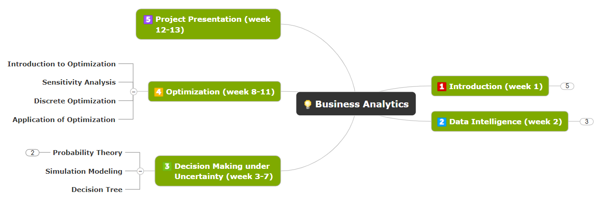

Ph.D. in Management
National University of Singapore
Research Affiliate
Research Fellow
Institute of OR and Analytics (NUS)
Social
Email
Scholar
ORCID
GitHub
Contact:
Institute of OR and Analytics
Innovation 4.0, 3 Research Link
Singapore 117602
Teaching is not about conveying message, but aspiration, inspiration, and perspiration.
Last Mile Innovation
Teaching Materials for Supply Chain Management (EMBA class)
Flexible Production Networks
Teaching Materials for Supply Chain Management (EMBA class)
Introduction to Business Analytics
Teaching Materials for OM/OR Undergraduate Students

Smart City Opeations
Teaching Materials for General OM/OR Audience
(The video is retrieved from https://www.youtube.com/watch?v=Im1eivas2b8)
Semester 1 AY 2018/2019
Semester 2 AY 2017/2018
Semester 1 AY 2017/2018
Semester 2 AY 2016/2017
Semester 1 AY 2016/2017
Semester 1 AY 2015/2016